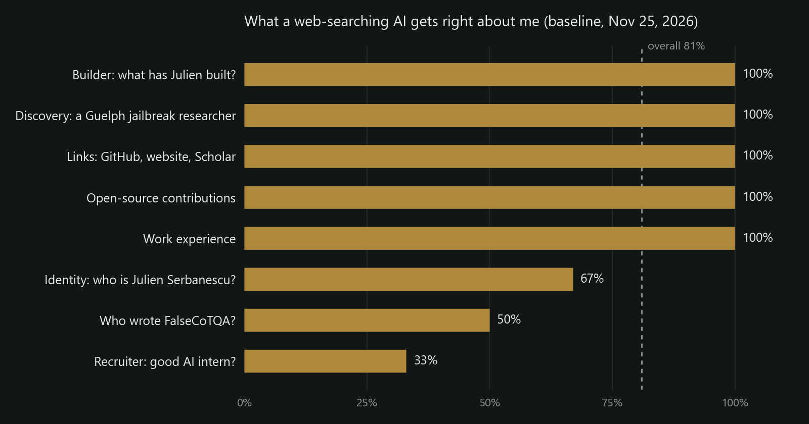

The First Reader
Captain's log, stardate 2026.329.
I picked up Harvard Business Review's The Year in Tech, 2027 to see how business people think about AI. One chapter stuck. Search engine optimization is giving way to something else. People no longer search and click through ten links. They ask an assistant, and the assistant searches, reads a few pages and writes the answer. The first reader of anything you publish is now a machine.
So I asked the obvious question. When a recruiter asks an AI about me, what does it say?
Measure it first
I wrote eight fixed questions. Who is Julien Serbanescu? What has Julien Serbanescu built? Who wrote FalseCoTQA? Find a Guelph undergraduate who has published on LLM jailbreaks. Each one goes to an AI that searches the web, and a script scores the answer against a fact sheet: facts it should find, claims it must never make, and which sources it cited.
The baseline was 81%.

- Questions about what I have built scored 100%. My open source work was there.
- A recruiter-style question scored 33%. It listed paper titles but dropped the venues, which are the part that signals quality.
- My day job showed up only when asked about directly. The who-is and recruiter answers left it out, and only two pages anywhere mention it.
- Two answers said FalseCoTQA was a SIGIR-AP 2025 best paper nominee. It is. That fact lived inside one window of my own site and on none of my profiles.
Trust, but verify
Before building the test, I asked an AI assistant to audit my online presence. It reported my GitHub as essentially empty. It has over a hundred public repositories and merged pull requests in pydantic-ai and mcp-atlassian. One confident wrong answer would have sent me to fix the wrong thing. That is why the test runs on fixed questions every month instead of one conversation.
Captain's log, supplemental. The fixes were small. One sentence about me, word for word, on the site and GitHub, with LinkedIn next, because an AI trusts a fact that several sources repeat. An llms.txt file, which is a short summary written for AI readers. A real page for every log entry, this one included, so there is more than one page to find. The next score lands on December 1.
End log.